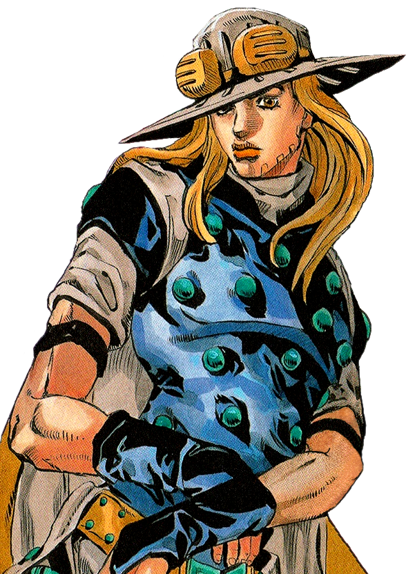

Participants
Johnny Joestar
“It's truly, truly been … a very long roundabout path …”

Gyro Zeppeli
“The shortest route was a detour. It was the detour that was our shortest path.”
Diego Brando
“I reject my humanity, JOHNNY! I am now a DINOSAUR!”
Hot Pants
“The only thing that can soothe and cleanse my 'sin' is that corpse...”
Pocoloco
“Pocoloco is the lucky guy after all!”
Sandman
“I'm going to cross the continent and win this race with nothing but my own two legs.”
Mountain Tim
“I'm a cowboy. All I wanted was a place to come home to. Just a place to return after my journey...”
Fritz von Stroheim
“YOU UTTER FOOL! GERMAN HORSES ARE THE WORLD'S FINEST!”